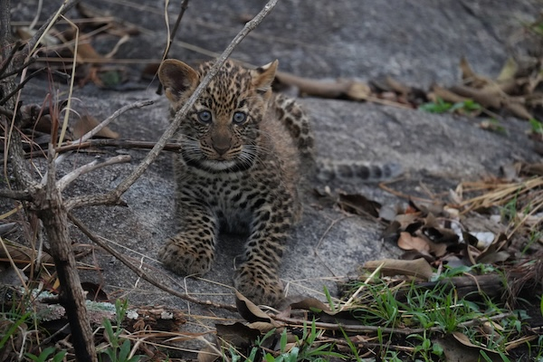
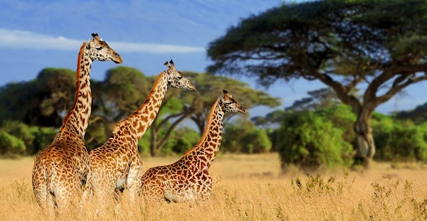

The Serengeti

Tarangire



One of the main reasons my family visited the Serengeti was to see the Wildebeest Migration. And while it was amazing so see hundreds of these creatures crossing the Mara River, we also saw tons of other stunning animals. My personal favorites were the baby leopards and lions.
I also really enjoyed Tarangire, since we saw lots of elephants which was really cool. However, there were a lot of bugs--both tsetse flies and mosquitos. Personally, I think that our experience in the Serengeti was more enjoyable, but it's honestly just whatever you prefer to see.